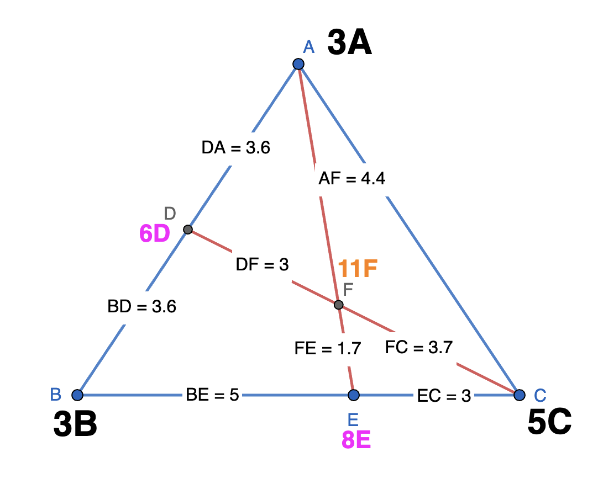
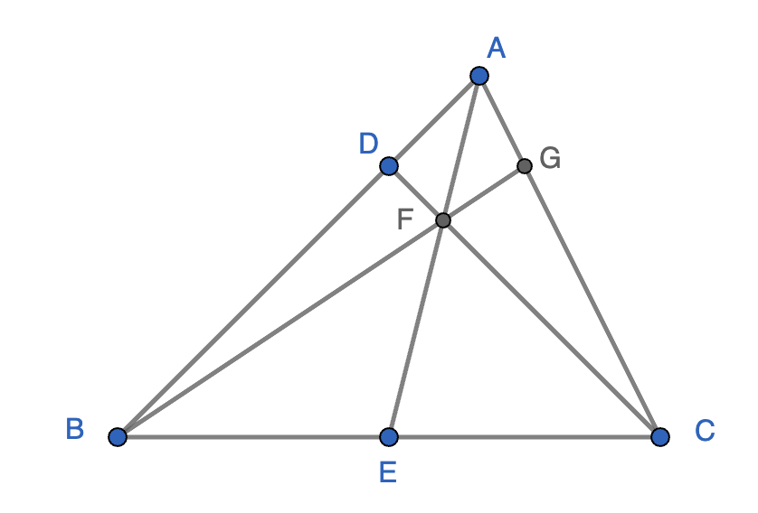
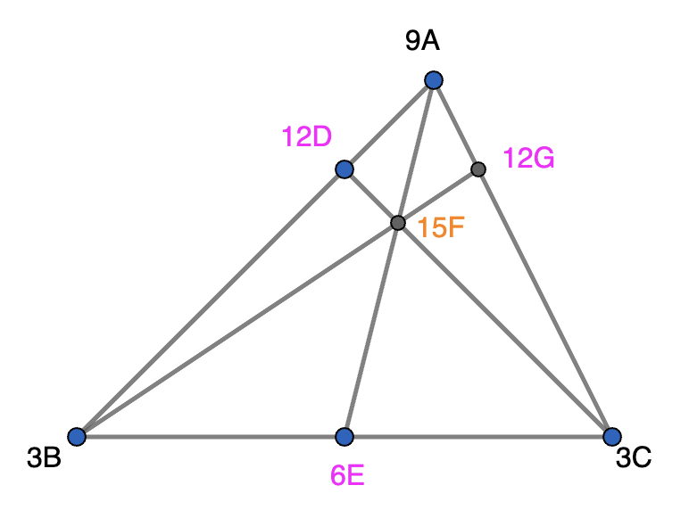
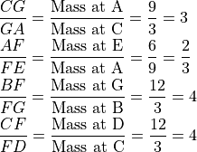
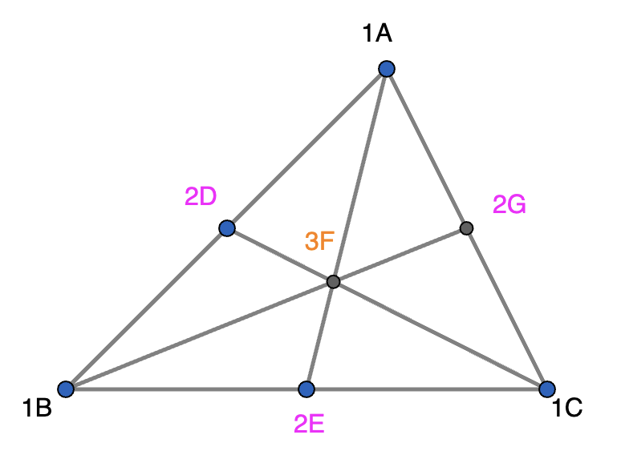
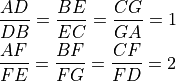
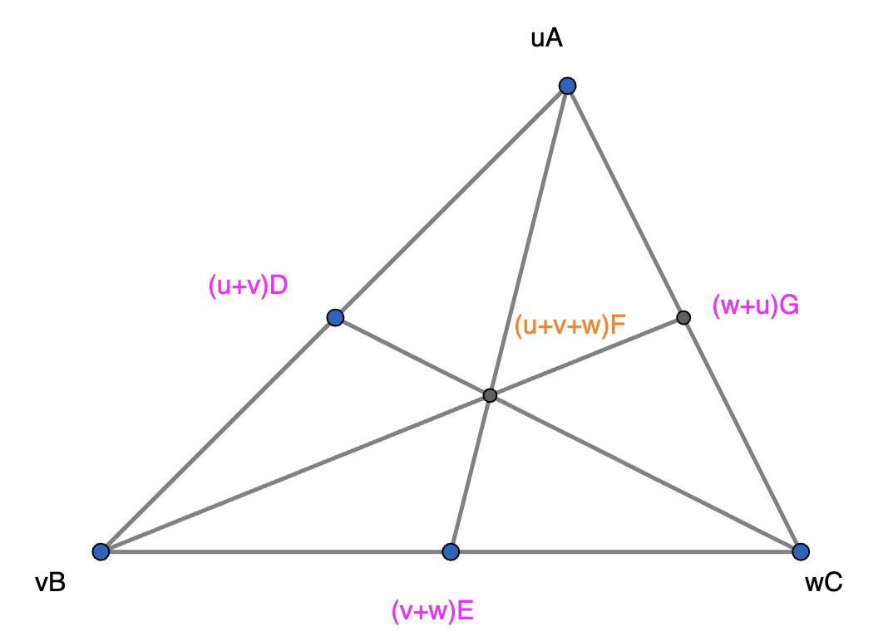
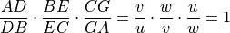
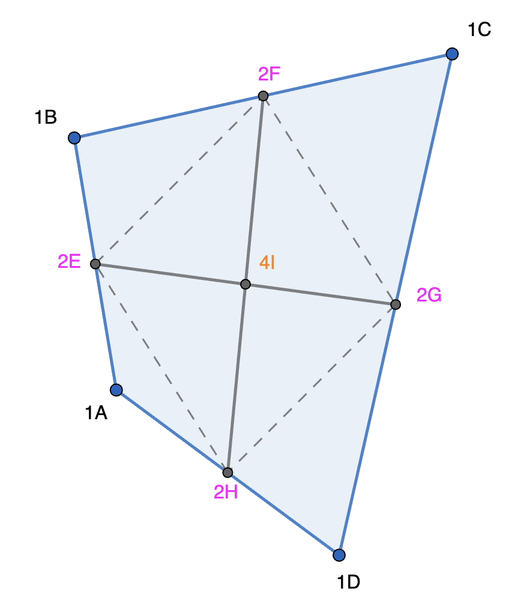

Mass Points¶
Center of Mass¶
{kind=link}

In triangle ABC, suppose point masses 3, 3, and 5 are placed at A, B, and C respectively. These are denoted by 3A, 3B, and 5C, respectively,
The center of mass of the masses at A and B is at the mid-point of A and B as the masses are equal. If a mass equal to the sum of masses of A and B - 6 - is assumed to act at point D, then the center of mass of this mass and the mass at point C - 5 - is at point F. This is same as the center of mass of the masses at A, B, and C. Hence, we place 6D at D. The total mass of the three masses placed at A, B, and C is equal to the effective mass of 6 placed at D and the mass of 5 at C. The total mass - 11 - is the effective mass at point F. We are not interested in Physics applications of this effective mass here. Instead, we are mainly interested in using these effective masses to infer the ratio of distances.
Alternatively, the center of mass of the masses at points B and C is at point E. The distances of point E from B and C, respectively are inversely proportional to the masses at points B and C, respectively. If a mass equal to the sum of masses of B and C is assumed to act at point E, then the center of mass of this mass and the mass at point A is also at point F. Hence, this approach of first computing the center of mass of two points and then using an effective mass at this point and the mass at the third point to compute the center of mass of the original three masses is consistent.
The segments from the triangle vertices to the opposite sides are called Cevians (pronounced “chevians” with a “ch” as in cheese). If we had drawn the third Cevian starting at B and passing through F, the foot of the Cevian would be the center of mass of the masses at A and C.
Mass Point Analysis¶
{kind=link}

Given and , find , , , and .
Let us use the center of mass concept from the preceding sub-section in reverse. Instead of finding center of masses given the point masses, we find masses that would get us the center of mass at the point of intersection of the Cevians. The objective is to place point masses at A, B, and C, and effective masses at D, G, F, and E such that the center of mass of the masses at A, B, and C is at point F.
Here is the recipe:
Place equal masses at B and C to fix their center of mass at point E.
Place mass at A to be three times the mass at B to fix the center of mass at point D (for the point masses at A and B).
For convenience of calculation, we choose the equal masses at B and C to be 3. It follows that the mass at A is 9. Any number would work for the equal masses at B and C as we are only concerned with the proportions. 3 is chosen to get nice integral numbers instead of fractions.
Thus, the effective masses at E, D, G, and F are 3+3=6, 3+9=12, 3+9=12, and 3+3+9=15, respectively.
{kind=link}


Here is another example where the Cevians are medians. The feet of the Cevians are the mid-points of the sides.
In this case, the point of intersection of the Cevians is called the centroid.
As the feet of the Cevians are mid-points of the sides, equal masses have to be placed at all the vertices to locate the center of mass at the centroid.
{kind=link}

From the masses in the above figure, the centroid divides the three medians in the ratio 2:1.

{kind=link}

In general,

This is known as ‘Ceva’s theorem’.
The concept of mass points can be extended to quadrilaterals as well. In this case we are looking at intersection of transversals, not Cevians.
Consider the case where the feet of the transversals are mid-points of the sides.
{kind=link}

Just as in the case of the centroid of a triangle, equal masses need to be placed at the four vertices of the quadrilateral ABCD. From the masses in the above figure, the transversals which form the diagonals of quadrilateral EFGH bisect each other. Thus, quadrilateral ABCD is a parallelogram. This is a remarkable result. The quadrialteral formed by connecting successive mid-points of any convex quarilateral is always a parallelogram.